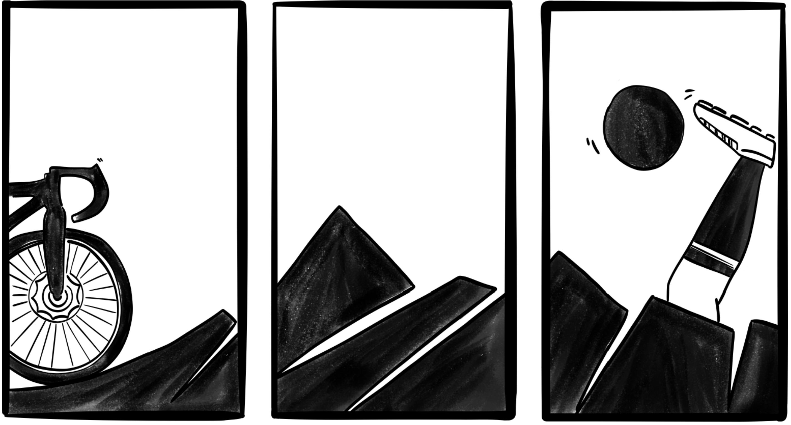

Associazione Be.St. friends
Accendere luci, insieme.

L’Associazione Be.St. friends nasce per proseguire l’opera e l'impegno sociale di Stefano Bertoldi. I soci fondatori, animati dalla volontà di non disperdere il patrimonio di valori, idee e progetti da lui avviati, intendono dare continuità alla sua visione. L'Associazione si ispira al talento di Stefano nel generare progetti capaci di coinvolgere persone con storie, culture e appartenenze diverse e alla sua costante tensione verso l'innovazione sociale, con l'obiettivo di “accendere luci” sulle questioni sociali che rischiano di rimanere in ombra. L’esempio di Stefano rimane la guida per generare benessere e inclusione nelle comunità.
Cena benefica
RSA Casa Famiglia SPES · via di Coltura 138, Cadine, Trento
Le donazioni raccolte sosterranno la realizzazione del nuovo Hospice Pediatrico di Trento, un luogo di cura e accoglienza per bambini, giovani e famiglie.

Il progetto che sosteniamo
Un nuovo Hospice Pediatrico a Trento
Il nuovo Hospice pediatrico di Trento sarà un centro dedicato alle cure palliative pediatriche, situato in via al Desert, accanto al Centro di Protonterapia e vicino al futuro Polo ospedaliero universitario. La struttura disporrà di sei posti, spazi per day hospital, ambulatori, terapie e supporto alle famiglie. Inserito nella rete provinciale delle cure palliative, l’hospice fungerà da collegamento tra ospedale, territorio e domicilio, offrendo assistenza specialistica, accoglienza e continuità di cura ai bambini, ai giovani adulti e alle loro famiglie.